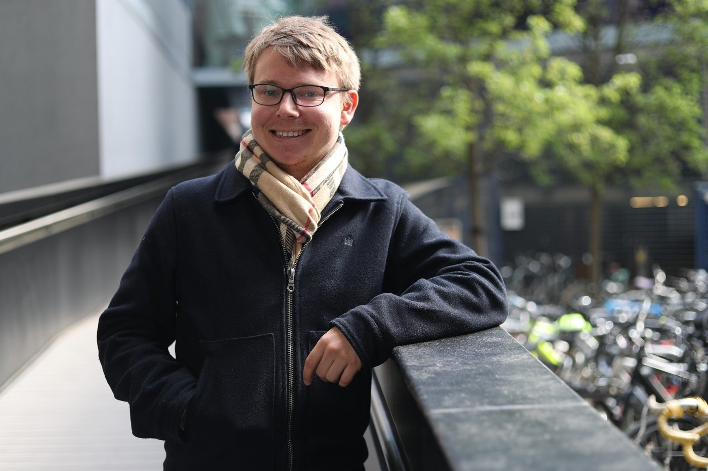

Edited interview
Daniel Freer
Designing robots that lend a hand
Imperial College London
Interview: 29 April 2019 · 4 minute read

What did you come to Imperial to study?
Through Whitaker, I completed a master’s of research in medical robotics and image-guided intervention. The first part involved classes and group projects, followed by a substantial research project.
My project was in assistive robotics. I designed a wearable robot intended to help with movement difficulties associated with Parkinson’s disease, including tremor. I worked on the mechanical design, getting the components working together, and processing signals to control the device.
There was only so much I could do in the project’s timeframe, but it gave me an opportunity to build something and begin exploring how to control it.
How has that developed during your PhD?
I have focused more on control, including brain–computer interfaces using EEG signals. The idea is to combine relatively simple commands from a person with a robot capable of carrying out a more complex task, such as reaching for an object.
One part is interpreting the person’s intention. The other is giving the robot enough autonomy to perform the action, perhaps using computer vision. Both are difficult, and there is still a long way to go.
More recently, new funding in the group has led me to consider how related technology might assist astronauts. That is a different application from the one I started with, but it is still interesting.
How did you find the opportunity in London?
I had worked in George Stetten’s laboratory at the University of Pittsburgh and wanted to do something related to medical robotics abroad. I asked whether he knew of suitable groups, and he put me in touch with a collaborator at Imperial.
I had wanted to study abroad during college, but it had not fitted into my plans. The Whitaker opportunity gave me another way to do it.
London was also appealing as a place to live. There is a great deal happening in the city, and it is a useful base for travel.
What do you enjoy about biomedical engineering?
I am interested in how humans work and how we might replicate or support some of those abilities. Prosthetics and assistive robotics raise those questions very directly.
When you begin trying to build a device that performs a human action, you appreciate how much is involved. We are still far from reproducing many things that people do naturally. That gap is part of what makes the research interesting.
What did a mentor show you about life in science?
George Stetten was an important example. Alongside his academic work, he taught a music workshop where we learned about producing music and had access to a music-engineering laboratory.
Seeing a successful researcher make room for another creative interest helped me imagine a career that did not require giving up everything else. I valued that example as well as his help finding the opportunity at Imperial.
How do you make space outside the laboratory?
I believe strongly in having a life outside work. During my master’s year, especially just after arriving, I went out to explore something different almost every day after classes.
I have slowed down a little, but I still enjoy traveling and keeping busy with things that are fun. I generally try to work a defined day and then leave, rather than allowing work to fill every evening.
That does not mean the research is unimportant. It means there are other things I want my time abroad to include.
How have you handled changes in research direction?
The move toward space robotics was challenging because I did not know much about the area and had not originally planned to work in it. I had to learn a new context for the methods I was developing.
Talking with other students helped. People in different groups were dealing with similar changes and questions about working with supervisors. It was useful to realize that adapting a project is not something only I was experiencing.
What do you hope to do after the PhD?
I think I would like to work in industry, although I have said that at earlier stages and then continued studying. I am keeping possibilities open.
I would particularly like to work on prosthetics or assistive robotics. Supporting older people is one area where I think robotics could eventually make a useful contribution. The challenge is to make the technology capable and practical enough to help in everyday life.